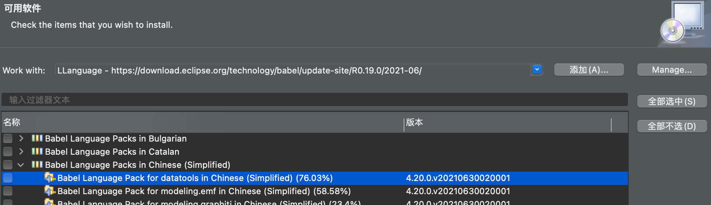
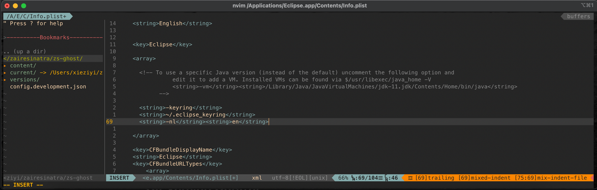

VSCode & Eclipse & IntelliJ
VSCode & Eclipse & IntelliJ Config Backup

VSCode
ESLint 配置
通常 Webpack 开发服务器会配合 ESLint 检查代码，可通过 Visual Studio Code 的 ESLint 插件配置完成代码的自动检查与修改。因 ESLint 需使用 .eslintrc.js 配置文件，所以要将脚手架工程作为 Visual Studio Code 的根目录。
Visual Studio Code 拓展中选择 ESLint 插件右下角的齿轮 => 点击拓展设置后选择工作区 => 点击右上角的打开设置 => 在 settings.json 中追加代码。
"eslint.run": "onType",
"editor.codeActionsOnSave": {
"source.fixAll.eslint": true
}
Vue3 代码模板
-
Code => 首选项 => 配置用户代码片段 => 新建全局代片段文件 => 命名
-
在新建的 .vue 结尾文件输入 vue3 后，按键盘的 TAB 即可自动生成模板
{
"Print to console": {
"prefix": "vue3",
"body": [
"<template>",
" <div></div>",
"</template>",
"",
"<script>",
"import { reactive, toRefs, onBeforeMount, onMounted } from 'vue'",
"export default {",
" name: '',",
" setup() {",
" console.log('创建组件 => setup')",
" const data = reactive({})",
" onBeforeMount(() => {",
" console.log('组件挂载页面之前执行 => onBeforeMount')",
" })",
" onMounted(() => {",
" console.log('组件挂载页面之后执行 => onMounted')",
" })",
" return {",
" ...toRefs(data),",
" }",
" },",
"}",
"",
"</script>",
"<style scoped lang='less'>",
"</style>"
],
"description": "Log output to console"
}
}
快捷指令
- 整段代码移动 => alt + ⬆️ or ⬇️
- 自动换行 => cmd + shift + p 输入 settings，在 defaultSettings.json 中将 editor:wordWrap 的 off 改成 on。
Enhanced development
- 路径别名 @ 替代 src 相对路径 => jsconfig.json 项目生效
{
"compilerOptions": {
"baseUrl": "./",
"paths": {
"@/*": ["src/*"],
}
}
}
- .eslintignore => 忽略被仓库管理的目录 -> 忽略风格校验
/dist
/src/vendor
Eclipse
安装 Eclipse
- 确认 Mac 上是否已安装 java 运行环境
$ java -version
# java version "11.0.11" 2021-04-20 LTS
# Java(TM) SE Runtime Environment 18.9 (build 11.0.11+9-LTS-194)
# Java HotSpot(TM) 64-Bit Server VM 18.9 (build 11.0.11+9-LTS-194, mixed mode)
- 安装合适的 Eclipse 版本
$ brew install --cask eclipse-java
# 或者去官网 https://www.eclipse.org/downloads/packages/
- 安装完成后在先前指定路径将 Eclipse 添加到应用程序
# 默认路径
/Users/${zsxzy}/eclipse
配置 Eclipse
- Preferences => Java => installed JREs 配置 JDK ：add 增加 Standard VM 的 JRE Types，并指定 JDK 安装的 Home 文件夹路径。这里选择 Standard VM 是因为 Oracle（以前是 Sun）实现的 JRE Type 向后兼容性较好。参考本人 add JRE 填写后 Finish。
JRE HOME: /Library/Java/JavaVirtualMachines/jdk-11.0.11.jdk/Contents/Home
JRE NAME: HOME
- 为防止工作区文件乱码，在 Preference => General => workspace 勾选 Defalt(UTF-8)选项并 Apply 。
Eclipse 设置语言
- 中文
Help => Install New SoftWare 中点击 add 添加从此链接适配版本的中文插件包。这里注意如果在选择 Babel Language Packs in Chinese(Simplified) 全部安装，在本人 X86 架构的 mac 出现 Eclipse 损坏的情况（MacM1 未出现此损毁）。解决方案是不选择 for rt.rap 的项目包。

- 英文
在应用程序中找到 Eclipse，选择 Show Package Contents，使用文本编辑器打开在 Contents 文件夹中的 Info.plist。在在 Eclipsekey 末尾添加命令行选项。
<string>-nl</string><string>en</string>

Git Version Control
-
Help => Install New SoftWare 中点击 add 添加从此链接适配版本的 EGit 插件包，载入后全选组件并进行安装。
-
确认 Preference => version control => Git => config => User Settings 添加（若安装过 Git 并链接过 Github 则会存在已自动载入完毕）邮箱与用户名。
-
在 Team => Share Project 建议自定义 new repo 去实现 Repository 存放路径。
/User/zsxzy/git/repository/(.git)
# .git 会自动添加,无需填写
- commit => Remote => Push 链接至 Github 并选择 Source ref 别称项为
refs/head/master完成 Add Spec。
Java 自动补全
Preference => Java => Editor => Content Assist => java automatic activation trigger 中补全单词触发。
abcdefghijklmnopqrstuvwxyzABCDEFGHIJKLMNOPQRSTUVWXYZ.
JavaEE perspective
Help -> install new software 搜索符合当前 eclipse 版本号的 item work with。找到 Web, XML, Java EE and OSGI Enterprise Development（可以具体到 Eclipse IDE for Java EE Developers）。
2021-06 - http://download.eclipse.org/releases/2021-06/202106161001
工作区配置
- Access Commands and other items
navigator、workspace、outline、console
- New
window -> perspective -> customize perspective -> menu visibility -> file 配置 new 相关。
Java Project、Package、Class、Interface、Enum、Annotation、JUnit Test Case、Folder、File、HTML File、Static Web Project、JSP File、Dynamic Web Project、Servlet、Filter、Listener、XML File
eclipse-jee vs eclipse-java
在 Homebrew 上存在三种类型的 eclipse 版本，cpp、jee、java。其中 Eclipse for Java 是带有 GUI 和 Swings 库的基本 IDE。但缺少用于处理数据库和 Web 开发的部分插件。适用于 Java EE 的 Eclipse IDE（EE 代表企业版）预装了所有这些插件，便于制作完整的软件，也是最理想的选择。理论上可以将所有组件从 Eclipse Java EE 安装到 Eclipse for Java。但是必须下载并解压缩 Eclipse for Java Developers 并安装名为 web tools platform 的插件。而 cpp 版本则是安装了 C/C++ 在此版本的 eclipse 上。
Bugs fixed
- "You do not have permission to open the application Eclipse JEE.app.Contact your computer or network administrator for assistance."
# Problem Report for eclipse
Crashed Thread: Unknown
Exception Type: EXC_CRASH (Code Signature Invalid)
Exception Codes: 0x0000000000000000, 0x0000000000000000
Exception Note: EXC_CORPSE_NOTIFY
程序运行 crashed 是由于 Code Signature Invalid（签名问题）。虽然 Mac 启用的安全机制默认只信任 Mac App Store 以及拥有开发者 ID 签名的软件，同时阻止没有开发者签名的软件。但是这不是我第一次打开此软件，而是进行系统更新操作后的副作用。在尝试重新给软件进行签名后问题解决。类似问题。
$ sudo codesign --force --deep --sign - /Applications/Eclipse\ JEE.app
Password:
/Applications/Eclipse JEE.app: replacing existing signature
- "The word 'localhost' is not correctly spelled." 提示处理
Preference 输入 spell，将复选框 "Enable spell checking" 去掉即可。
junit 报错 => java.lang.Exception: No tests found matching [{ExactMatcher:fDisplayName=testQuery1]
考虑三个方面，是不是没写 @Test；是否是 public、参数、返回值、修饰符的错误；是不是 spring 包与 junit 的包的兼容问题；是否日志已添加。
- Mac m1 电脑 idea 卡顿的问题解决
macm1 IntelliJ 应注意兼容的版本，如不是 aarch64，而是 x86，那就是版本错了。
IntelliJ IDEA 2022.1.1 (Ultimate Edition)
Build #...
Licensed to ...
Runtime version: 11.0.14.1+1-b2043.45 aarch64
...
结束
本博客所有文章除特别声明外，均采用 CC BY-SA 4.0 协议 ，转载请注明出处！